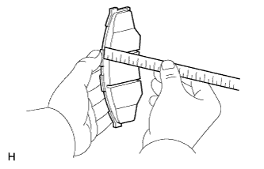
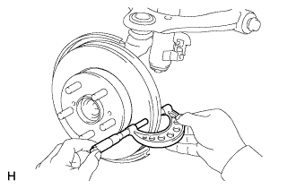

PHANH TRƯỚC > KIỂM TRA |
| 1. KIỂM TRA XI LANH PHANH VÀ PÍTTÔNG |
Kiểm tra xi lanh và píttông xem có bị gỉ hoặc bị xước không.
Nếu cần thiết, hãy thay thế xi lanh và píttông.
| 2. KIỂM TRA ĐỘ DÀY MÁ PHANH |
|  |
Dùng một thước, đo độ dày của má phanh.
| 3. KIỂM TRA TẤM ĐỠ MÁ PHANH ĐĨA PHÍA TRƯỚC |
Kiểm tra 4 tấm đỡ.
| 4. KIỂM TRA ĐỘ DÀY ĐĨA PHANH |
|  |
Dùng Panme, đo độ dày của đĩa phanh.